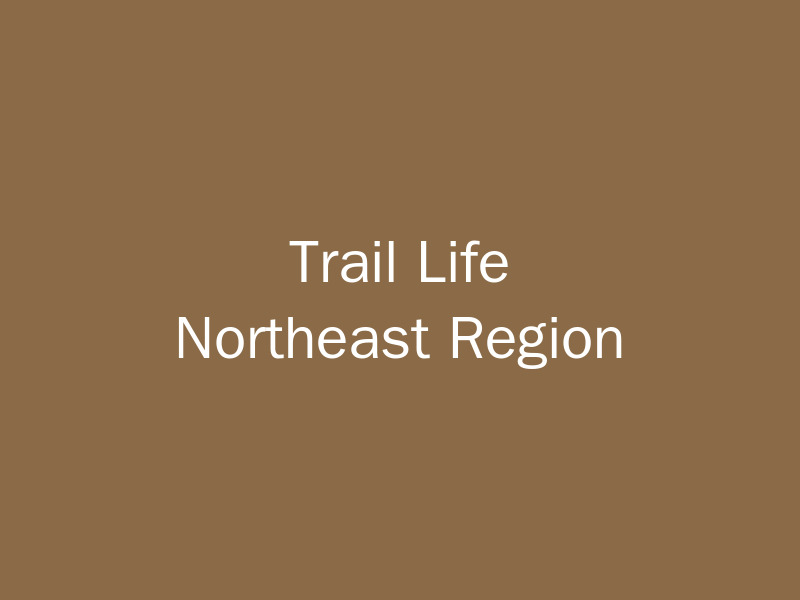

Welcome to Trail Life Northern Tier!
We're thrilled to launch our new regional website, designed to connect troops, share resources, and celebrate the amazing work happening across the Northern Tier. This platform will serve as your central hub for regional news, events, training opportunities, and more.
Read More